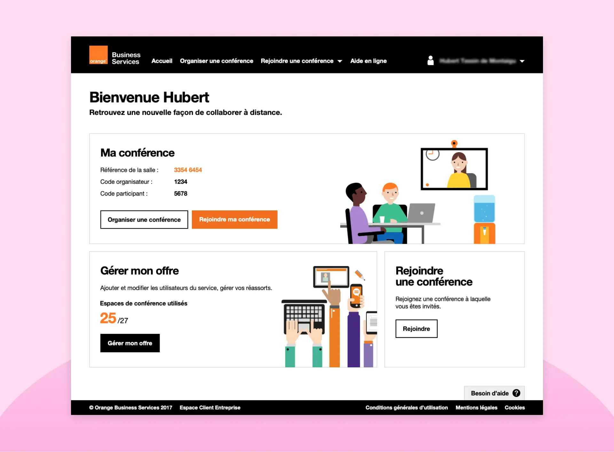

Janvier 2018 - Décembre 2018
Open Video Presence Advanced (OVPA) est un outil vidéoconférence professionnel sécurisé pour collaborer à distance. Il permet d'organiser une conférence et d'inviter des participants en quelques clics.

La première version du service donnait la possibilité aux administrateurs de créer une salle virtuelle nominative pour certains collaborateurs. Cette offre ne correspondant pas exactement aux besoins des entreprises, une nouvelle offre a été créée ensuite. Les collaborateurs d'une entreprise peuvent désormais créer des salles virtuelles à la volée, sans restriction nominative.
À mon arrivée sur le projet, des premiers éléments d'interface avaient été produits mais ils n'avaient pas été testés par des utilisateurs.
La nouvelle offre On-Demand permet aux collaborateurs d'une entreprise de créer une conférence à la volée. Il n'est plus nécessaire d'avoir de compte, ni d'être titulaire d'une salle virtuelle. L'arrivée de ce fonctionnement va créer de nouveaux cas d'usages qui vont impacter l'interface.